I got my first Covid jab today and also unfriended someone on another social media site. A Covidiot of course. Every post was like a personal insult or slap in the face to those of us that are trying to do the right thing. We didn’t interact anyway so no big loss.
October was such a dreary month and the rest of the year is shaping up to be more of the same. I’m someone who likes to be at home but the lockdown blues are starting to get to me too. I haven’t felt like doing anything for weeks. Music and films are keeping me a bit buoyant.
Added these resistance bands to my daily indoor cycle exercises. I’m not a gym/workout kind of person but I need to get those lockdown joints and muscles moving.
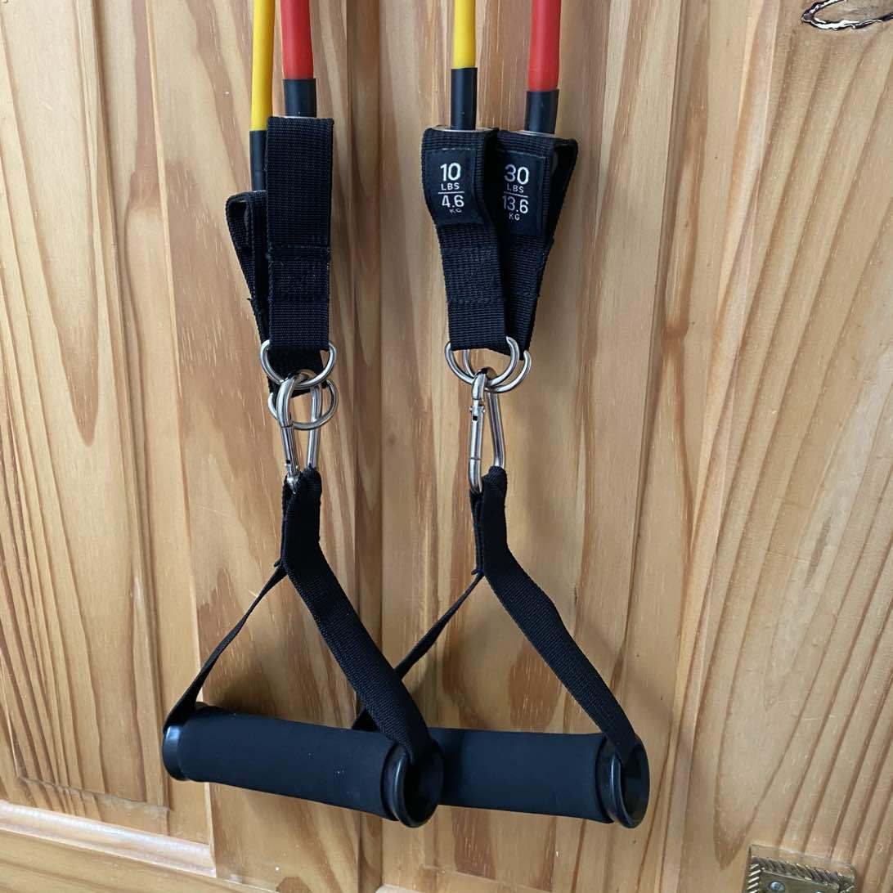
It would be helpful if the Micro.blog account page told you which paid account you’re currently on. I’ve juggled a few other subscriptions around and upgraded to Premium but there’s no indication that the upgrade has went through.
I had to phone Apple Support today and speak to an actual human being. It was a pretty good experience as far as these things go. My problem was solved quickly and calmly. I wont be reticent to phone again if I have the need.
Bob has been on a run of fantastic albums recently. I’m looking forward to the new one very much.
The former Hüsker Dü and Sugar frontman is back with a career box set and an incendiary new album, having come to terms with childhood trauma, his sexuality and the death of his bandmate
Via: Bob Mould, alt-rock’s gay icon, takes on American evil: ‘My head’s on fire!’ | Music | The Guardian
I don’t get sleep tracking at all. Any tracker I’ve tried to use has just recorded how long I’ve lain in bed. It’s another tiny layer of anxiety that only adds to my sleep problems anyway.
Earworm of the day: Troublemakers by Lavinia Blackwall. 🎵
I’d never seen Silicon Valley before so I started a binge watch. One season down and I’m really enjoying it. Mike Judge’s name on something is usually a sign that it’s going to be good.
Sometimes I delete things I’ve posted. I’ll find something I wrote that sounds so badly judged or expressed that no amount of editing could make better and just press that delete button. It happens less and less but I still do it. Is this wrong? Bad etiquette?
Currently reading: Manhattan transfer by John Dos Passos 📚
I grew up on buying vinyl records but I’m not wholly back into the resurgence of the format. I’ll buy the odd special edition but I just don’t have the energy to care about looking after a new collection.
Cardiacs' Tim Smith: a one-man subculture who inspired total devotion | Music | The Guardian:
Tim Smith, who has died aged 59, made a bizarre kind of rock music that was so wrong it was right – and his boundless enthusiasm was so infectious it created an army of followers.
It seems some folk are so desperate to try Roam that they’re willing to pay lots of money to buy beta accounts off other users. Madness.

Our bumbling Prime Minister is going to get us killed. I’m not prepared to sacrifice myself, family, friends, and colleagues, for the sake of a rotting economy.
Winter froze the river
And winter birds don’t sing
So winter makes you shiver
So time is gonna bring you spring
Laura Nyro, Time and Love 💬
Some favourite song lyrics.
Steve McQueen jumped the first one clean
But the great escape
He tried to make was not to be
Maybe next time Steve
From Absent Friends by The Divine Comedy 💬
Kraftwerk: their 30 greatest songs, ranked! | Music | The Guardian:
From cycling soundtracks to anti-nuclear protest music, we celebrate the work of the late Florian Schneider and the groundbreaking group he co-founded
Good list.
Midnight Diner: Tokyo Stories | Netflix Official Site:
Patrons of an otherwise mundane Japanese diner find simple yet profound connections with one another based on the shared love of a particular dish.
Took a chance on this last night and I loved it.
Carter, tears of terror mingling with make-up and the rain, squeezed the accordion. There was the long-drawn-out chord that by law must precede all folk music to give bystanders time to get away.
Another Terry Pratchett gem from Lords and Ladies. 💬
“They all laughed when I said I wanted to be a comedian. Well, they’re not laughing now.”
Bob Monkhouse 💬
Lots of bird activity in the back garden today. I think a robin is building a nest in one of the bushes.
Oh, won’t you stay
We’ll put on the day
And we’ll talk
In present tenses
Joni Mitchell, Chelsea Morning 💬🎵
Sad to hear that Dave Greenfield of The Stranglers has died. The Black and White album was one of the first records I ever bought and I still have the same copy.
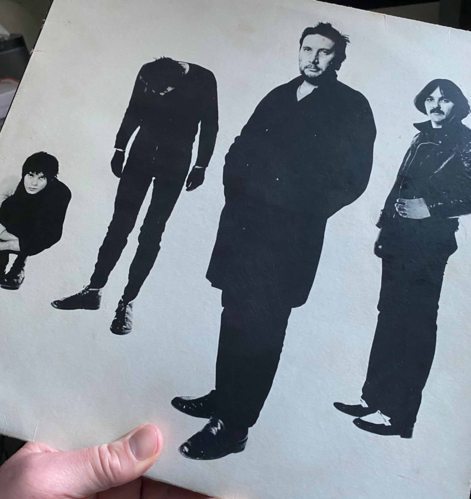
They were both silent for a moment, and the silence wound out around them and filled the kitchen, to be sliced into gentle pieces by the soft ticking of the clock.
Terry Pratchett at his most poetic. I love this line from Lords and Ladies. 💬
I removed and re-added my Letterboxd feed and it seems to have posted every update for the last few weeks. Apologies to anyone whose micro.blog feed I might have flooded.
I watched Thor:Ragnarok next in my lock-in Marvel movie marathon. The straight up comedy did not work for me at all. Big events were supposed to be happening and I was made not to care. Next!
There’s a Twitter thing going around asking people to post a photo you’ve taken from a place you’ve been but you don’t appear in. “Just a pic, no description”. I’m doing it here.
Things just got serious. I’m drinking coffee instead of my usual tea! Kindle primed with books of prose poems and Japanese short stories. I downloaded Berlin Alexanderplatz too so plenty to read.
I’m trying my hand at writing little lipograms. A lipogram is a piece of writing that forces you to omit a certain letter eg the letter “e” which is the hardest to omit in English. It’s difficult but fun and gets the brain cells working.
I succumbed to the lure of Disney+ and signed up for a few months. The first thing I’m doing is watching every single Marvel movie in chronological order that I haven’t seen before i.e. all of them.
I needed an external drive to rip CDs to flac files to play in my new music player. After looking at all of the cheap ones available I’ve gone for quality and ordered the old Apple USB SuperDrive. It costs more but looks like it won’t fall apart after a few weeks use.
So sad to hear about the death of Neil Innes (Bonzo Dog Band/The Rutles/Monty Python) today. I’m the Urban Spaceman
I’d forgotten how great the Popclip app is. The ability to select some foreign language text on a page and have Popclip translate it is extremely useful.
We don’t usually have a family Christmas until Boxing Day so I hope everyone has had a happy festive time.
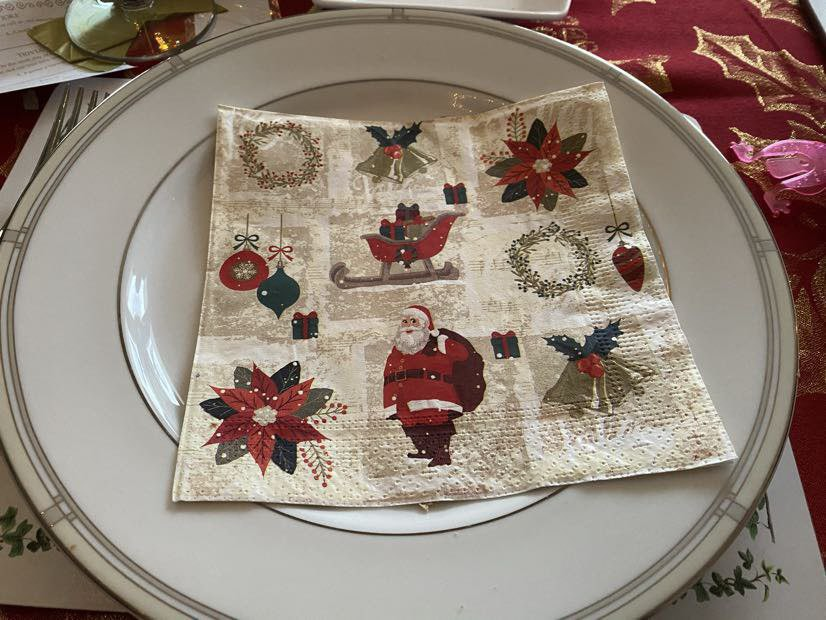
I’m already a bit of a cheapskate when it comes to Kindle books so £0.99 for Neil Gaiman’s American Gods quartet was an easy purchase.
When it comes to great big works of fiction it’s Kindle all the way for me.
Last pub quiz of the year. We lost the main quiz but won £50 of drinks for the next time we visit. A good night and just what I needed.
Fantastic show by Dweezil Zappa and band in Glasgow tonight. Perfect antidote to the December doldrums. 🎶
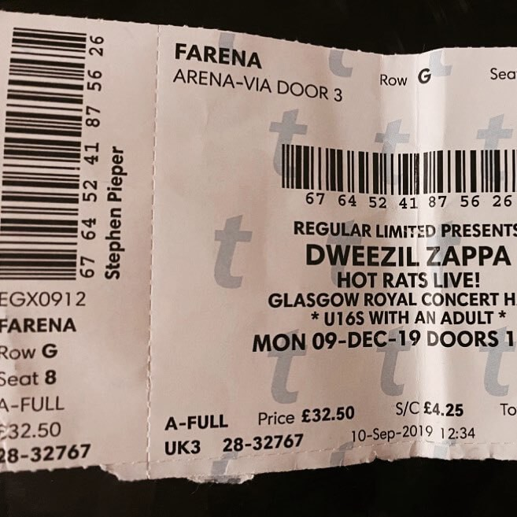
This “mistake” is more interesting than the other photos I took at the Drygate Brewery in Glasgow last night. I was there to see the great Norwegian band Wobbler play in the city for the first time. I hope they come back very soon.

The amount of choice available to a non-techy Wordpress user (themes, plugins etc) can leave you a bit bewildered. I’m not clueless when it comes to these things but I have been enjoying the speed and ease of posting to micro.blog more in the last month.
I don’t know many poems by heart but I think I could recite This Be The Verse by Philip Larkin. The first line is one of the most famous in poetry but probably not suitable for family occasions. It’s forthright and pessimistic and easily searchable.
I’m finding it difficult to motivate my mind, wrist, and fingers to come up with an idea for Microblogvember (supplemental) today. Better luck tomorrow.
A knock-on effect of doing these little daily things is that I feel the need to keep going and so I’ve enrolled for an iPad art class at Sketchbook Skool. I use about 5% of the power of Procreate so I’m looking forward to learning more.
I’m never satisfied with panoramic photos with people in them. Unless you can get all of those people to stay very still they tend to end up looking very strange and distorted. Landscapes are fine but then I don’t think panoramic mode is really meant for anything else.
Here’s a song for Sunday. Beloved by Firefly Burning 🎵
December is going to be marred in the UK due to one of the most horrible election campaigns in living memory. I’ll be voting, of course, but music and carousing are going to be very important to keep the spirits up.
It’s coming to the end of Microblogvember. I still have the extra six days to complete due to my late start though. I’ve really enjoyed doing it and plan to integrate it into every day and month going forward. Many thanks to @macgenie for the daily inspiration.
Catching up on some podcasts. If it wasn’t for Andy Ihnatko’s good sense I don’t think I could ever listen to Macbreak Weekly again. He brings a welcome balance to proceedings.
“Take me to the fantastic place
Keep the rest of my life away”
A highlight of the recent Marillion shows.
The history of Monopoly, the property trading game, is much more interesting than the game itself. This is the sort of thing you learn while idly clicking through Wikipedia.
The British political system is antiquated and needs reform but I’m very happy that no mega rich person can decide to run for prime minister just because they feel like it.
I paid for a discounted subscription to Inoreader but I’m already regretting the decision. I much prefer the simplicity of Feedbin. It’s good to mix things up now and again but it didn’t work out this time.
I’m sure someone famous said it better but I think the world would be a lot nicer if people enjoyed their own company a wee bit more.
📚 The Lark Ascending - The Music Of The British Landscape by Richard King. Enjoying this. There’s some good stuff about the “blood and soil” type fascists that tried to organise in Britain between the Wars. I’m always suspicious of those that talk about an idyllic pastoral past.
I’ll be the one with the woebegone look if I can’t find a way to fit woebegone into a post. It’s an archaic word and probably sits better within the confines of a poem rather than everyday speech. The sort of word that sits alongside “methinks”.
You don’t notice the background hum of household appliances until it’s no longer there. There was a short power cut in the morning recently and the sudden silence just about jolted me awake.
It’s getting to the time of the year when I start thinking how nice hibernation could be. Like finding a warmish hollow somewhere and staying there till March. I can dream.
I used to be in a pub quiz team that continually came in second place. We changed our team name to The Runners Up and started winning. “And tonight’s winners are…”
I think there are perfectly rational reasons for wanting to avoid all news media but it’s important not to let your concern with the bigger world abate. There should be some kind of balance. #mbnov
I’ve managed to build up quite a bit of annual leave so guess who has nearly all of December absolutely free. I like to keep a lot of days free for this period because the weather usually takes a bad turn and I’m lucky to be in a position where I can take them all at once.
Microblogvember has been a superb lure to get me posting everyday to my microblog. Whether the posts are worth reading or not is up to somebody else but I’m really enjoying it anyway. It’s starting to feel like a real habit.
A 2-1 win for Scotland today against Cyprus. It wasn’t very convincing but a win is a win and they can’t really fall much lower. ⚽️
I’d describe myself as selective when it comes to using my time but I also recognise that being selective can be an underlying excuse for doing nothing at all. The older I get the more I see this in myself.
It would have been be easy to talk about how murky social media has become but instead I’m going to raise a glass to Murky, the young murloc, that appears in World of Warcraft. /mbnov
Currently reading: These Are My Rivers: New and Selected Poems 1955-1993 by Lawrence Ferlinghetti 📚
Two big issues have so distorted all of politics in the UK, and specifically Scotland, that I rarely stick my neck out and make any comment. There is no room for nuance or doubt anymore. Defend people that need defending and vote accordingly is all I feel I can do.
I’m not able to stand for long periods of time in one place anymore so it’s really nice to see a favourite band in a nice theatre with nice comfy seats. The Royal Concert Hall in Glasgow is one of my favourite venues to go and hear live music.
Fantastic Marillion show in Glasgow tonight. Seasons End, their climate change song written in 1989, was spine-tingling with the addition of live strings and brass.
🎵 The Blue Nile - Stay. Yes, I’m resorting to a song for today’s Microblogvember prompt but it is The Blue Nile after all.
Someone mentioned the nancy comic strip a while back and I became a big fan. It’s nice to have this new collection of them.
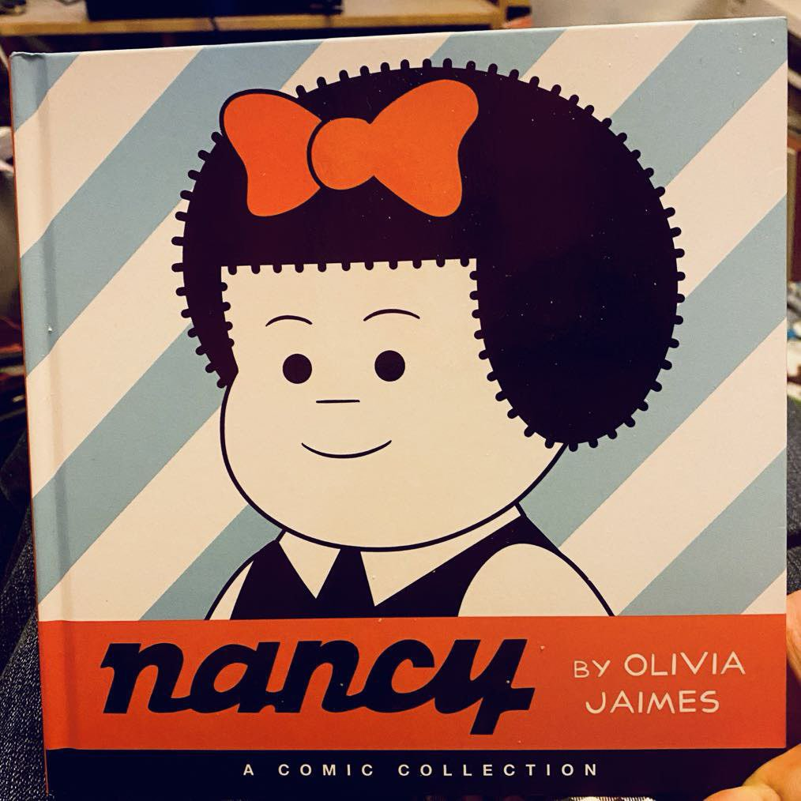
Species of Space and Other Pieces by Georges Perec is one of my favourite books. The main essay is about the different kinds of space humans use and he goes out from the empty page to the solar system. It’s all very playful and the other pieces are just as fun and interesting.
There’s a ten percent chance of snow according to the weather channel. It has been quite cold for a few days but the temperature hasn’t really dropped below zero yet. We don’t often get snow at this time of the year so I’m not expecting any.
Alice Cooper said on the radio that people in rock bands don’t make the effort to be stars anymore. I think he’s right. Most modern bands look like they just walked off the street and don’t project any bigger than life image. The idea of the “star” is exclusive to pop music now.
I think it’s frightening how quickly the days and months of this year have passed. It’s supposed to be a normal thing as you get older but I think it’s also a symptom of being stuck in a rut. I recognise that in myself and will need to somehow shake things up a bit in 2020.
🎵 I’ve been smitten by this band. Sweet Billy Pilgrim - Asking For A Friend
I watched the Bob Dylan/Rolling Thunder Revue documentary on Netflix. Wonderful stuff from start to finish. The bit where Joni Mitchell, Dylan, and Roger McGuinn played “Coyote” was a highlight.
Dazed and confused...
Another very funny bit of writing from Marina Hyde. She makes this whole shambles almost bearable.
As for his turns away from Westminster, Thursday afternoon found him at a Yorkshire police academy, where he appeared deeply confused. He resembled a political Elvis – twilight years – who’d had to be slapped awake on the tour bus by his manager, given some of his special medicine, and shoved on to greet the LA crowd with the words “Hello Philadelphia!” This, but in Wakefield.
Louis Cole & Genevieve Artadi of KNOWER feat. by WDR BIG BAND: Gotta Be Another Way | REHEARSAL. KNOWER plus big band. This is great. 🎵
I’ve reinstalled TiddlyWiki after getting my new computer. The old wiki was backed up in Time Machine so it only took a couple of minutes to get going again. I’ve missed playing around with this.
🎶 Alive. Really loving the new song from Big Big Train.
Reports coming in that Mark Hollis (Talk Talk) has died. I haven’t seen any confirmation yet but very sad if true. 🎶
I don’t expect the streaming Criterion Channel to come to the UK anytime soon but I’ve noticed, while using a VPN, you can sign up with a UK credit card. Maybe worth a shot.
Bruno Ganz, actor who played Hitler in Downfall, dies aged 77 | Film | The Guardian
A great actor who will probably be best remembered for a silly YouTube meme now. Wonderful times.
Re-uploading a lot of old photos to Flickr. This is one of my favourite bits of public sculpture in Glasgow.
I’ve given the Apple HomePod enough time to get better. Back to Sonos with its built in support for Mixcloud, Bandcamp, Tunein, Pocket Casts, Soundcloud… 🎶
Currently reading: The Adventures of Augie March by Saul Bellow 📚
I just noticed that web pages on mobile Safari can be “handed off” to Firefox on the mac desktop. I find this quite surprising.
I’m trying to put a link at the top of the Marfa theme to a category. The new category links on the archive page have the address ”/categories/topic”. If I try and save a page with that link the ”/categories” part is stripped out making the url fail. Am I going about this the right way?
edit (2-2-2019): I was going about it the wrong way. All you need to do is add the full url as the contents of the page.
I watched the Fyre Festival thing on Netflix. It’s a fairly dull documentary about a bunch of horrible people. The only time I felt anything was when that poor woman who ran the restaurant on the island talked about losing her life savings which were probably a fraction of what those idiots payed to get there.
I’m really enjoying messing around with TiddlyWiki. Currently transferring in my saved Kindle quotes from Evernote.
This has been the mildest Scottish winter for a long time. There hasn’t been any lowland snow and I could count the number of frosty mornings on one hand. Central Europe is getting it bad so I hope the winds continue to be westerly.
I’ve grown to really love Mixcloud. It’s not just about DJs and dance music. You’ll find something there no matter what your taste in music is. 🎵
Christmas Time Is Here - Khruangbin. I love this version. 🎶 🎄
Google+ shutting down after users’ data is exposed - BBC News
Google is shutting down much of its social network, Google+, after user data was left exposed. It said a bug in its software meant information that people believed was private had been accessible by third parties. Google said up to 500,000 users had been affected
Good grief.
Carlos Ezquerra 1947-2018 2000 AD
2000 AD is profoundly saddened to confirm that artist Carlos Ezquerra has passed away at the age of 70.
Very sad news. Carlos Ezquerra’s art style defined 2000 AD in my mind.
It turns out that you need to give the Launchbar app “Full Disk Useage” under the new MacOS Mojave privacy settings. I thought I had lost nearly fifteen years of shortcut history.
I pay a subscription for Bear Notes but I’ve found myself just throwing stuff into the Apple Notes app recently. Not caring about tags or formatting feels quite liberating and I can find things easily enough.
There’s a baby gull on the roof at work. The mother sits on this pole all day to protect it and flies around, making a noise, if you walk past.
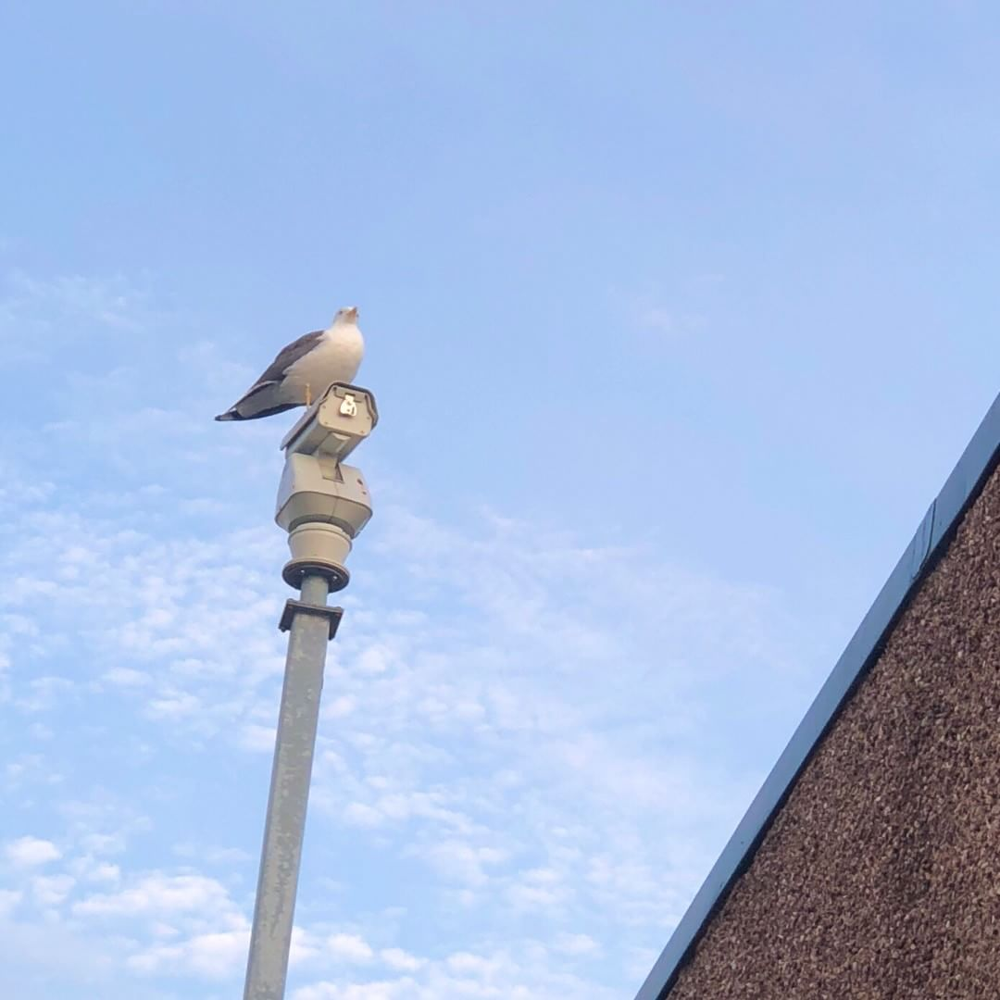
Is there any real advantage to using a WordPress optimised hosting setup? What does that really mean?
🎵 Sunday afternoon tunes. Primrose Green by Ryley Walker (iTunes). Recommended for all you John Martyn/Nick Drake/Pentangle/Tim Buckley fans.
I cancelled my Adobe Creative Cloud account today because I just wasn’t using it enough to justify the cost. They don’t like you leaving, do they?
This updating stats page for my web hosting company is really nice.
I was quite adamant that I wasn’t going to install the iOS 12 public beta this time but that lasted about a week.
I don’t think I’m doing this meditation thing right when the sound of a small bell makes me jump out of my skin.
Your government is taking children from their parents and putting them in cages. Stop lecturing the world about human rights. www.bbc.co.uk/news/4453…
The warm weather always acts as an invitation for the neighbourhood cats to wander around the house.
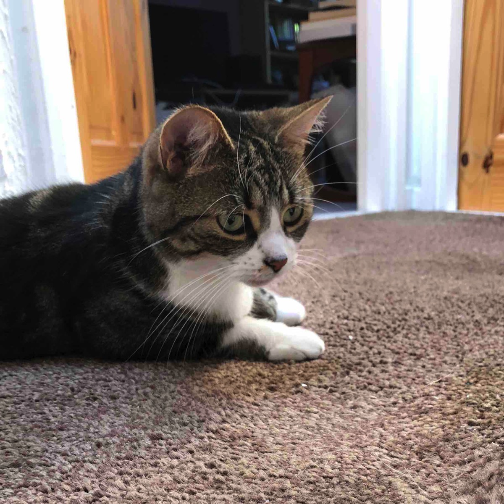
Today’s escapee from the heat. It did a tour of every room in the house and then lazed around for a bit on the carpet. #cats
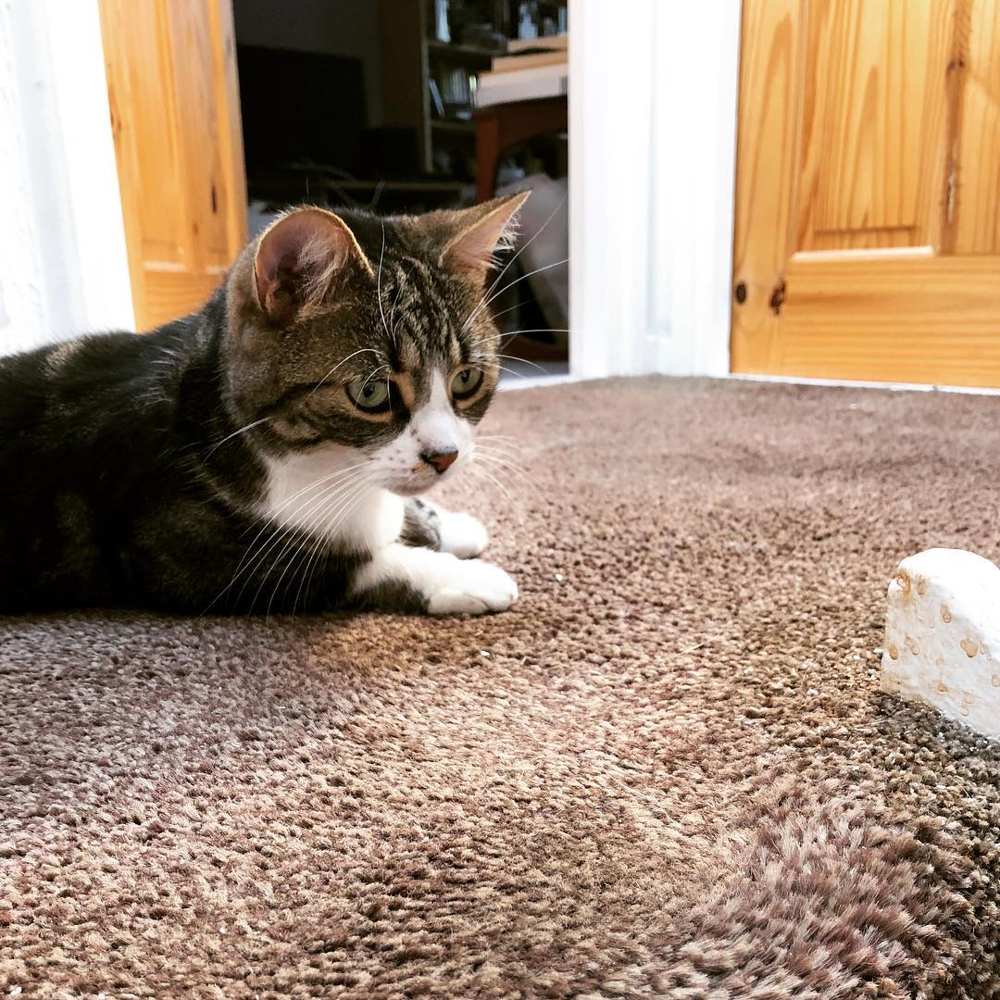
Cable and broadband has been down for a couple of days. It’s amazing what you can get done in its absence.
I walked out the front door this morning to be confronted with a mass of feathers and the remnants of a pigeon. Urban foxes must outnumber those found in the countryside now. I see them everyday.
I was looking to register a domain name today. The price range at various companies for the same name was pretty big. My usual place wanted £30/year while the company that starts with “Go” were practically giving it away.
🎶 I love The High Llamas.
I downloaded all my Flickr photos and shut down my Yahoo account just before the recent Smugmug takeover. Maybe I’ll move them back again when a new sign up process is started.
Added the BFI Player to my Fire TV Stick so with that, and MUBI, I’ve got good films to watch every day now.
I set a reminder to cancel Drafts 5 at the end of the seven day trial but I’ve cancelled the reminder and I’m subbing. I think I’ve reached my software subscription limit though.
Jetpack for Wordpress gets a lot of stick but the VaultPress plugin is really very good. Restored a blog to a new host yesterday quickly and seamlessly. Glad I paid for it.
Moved to a new host today and my web site address is defaulting to “www.” at the start of the url. This is causing problems with some Wordpress plugins. I’m not very experienced with these things but if I delete the CNAME record for www will it fix this? Is there a better and safer way?
Headline of the day: ‘Very angry badger’ causes part of Scottish castle to be closed.
It has probably been there in previous versions but I really like the “Append to journal…” action in Drafts. I can see lots of uses for it.
Gosh. My host, Tsohost, is really going downhill. The amount of downtime on cloud hosting is getting ridiculous. Frustrating day.
I don’t think I’ll doing any microcasting soon. I still hate the sound of my own voice and I think it’s much harder to speak about things, unselfconsciously, than it is to write them down.
A warning from within The Archive app. There’s nothing wrong with a bit of bad taste now and again.
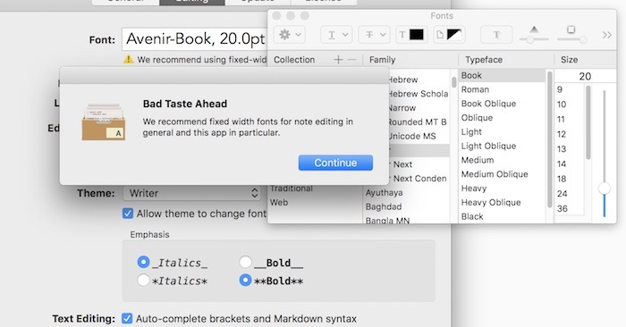
I’ve been getting multiple emails from Wordpress Jetpack Support saying that my site has been offline. It’s happened the odd time over the last few months but has steadily got worse. I think it’s time to find a new host.
I can see Twitter forcing developers to allow their ads in timelines or be forced out of business. I’m surprised Tweetbot has been ad-free this long to be honest.
🎶 THRAK by King Crimson was released 23 years ago today.
It’s usually starting to warm up a little by now but snow is still falling here. The last few weeks have been full of cold and coughing and I can’t wait for Spring.
Has someone turned off the iCloud email spam filters again? There’s a load of rubbish getting through here.
🎵 Fantastic Steven Wilson show in Glasgow last night. Excellent sound, visuals, and set list. www.setlist.fm/setlist/s…
I’ve been feeling run down after a bout of flu but made it out to see Yes tonight on their 50th anniversary tour. Really enjoyed it. I’d managed to avoid set list spoilers so there were a couple of nice surprises in there. 🎶
This winter has outstayed it’s welcome. My favourite times of the year are when you can feel the seasons changing. No sign of spring yet.
Thanks to blog commenters I’m using the Workflow app and TinyPNG to shrink image sizes on the move now.
Time to accept that whenever The Producers is in TV listings it’s going to be the inferior remake and not the classic Zero Mostel/ Gene Wilder version.
One of the many things I like about micro.blog is the lack of animated gifs in the timeline. I hope it stays this way.
I’ve been using Feedbin for a couple of years. Just noticed that if you go into settings you can see a graphical representation of how often a feed updates. I’ve used that to unsubscribe from a lot of inactive sites and made my list much more manageable.
This image on the cover of the Wonderous Stories book could be a metaphor for being a progressive rock fan in the late 70s.
Just watched a really good history of the Sunset Strip. Lots of music and bad behaviour. When I visited in 2004 on holiday the place was deserted.
A little project. I’m #drawing the same mug every morning for a month. I won’t be sharing them all here though.
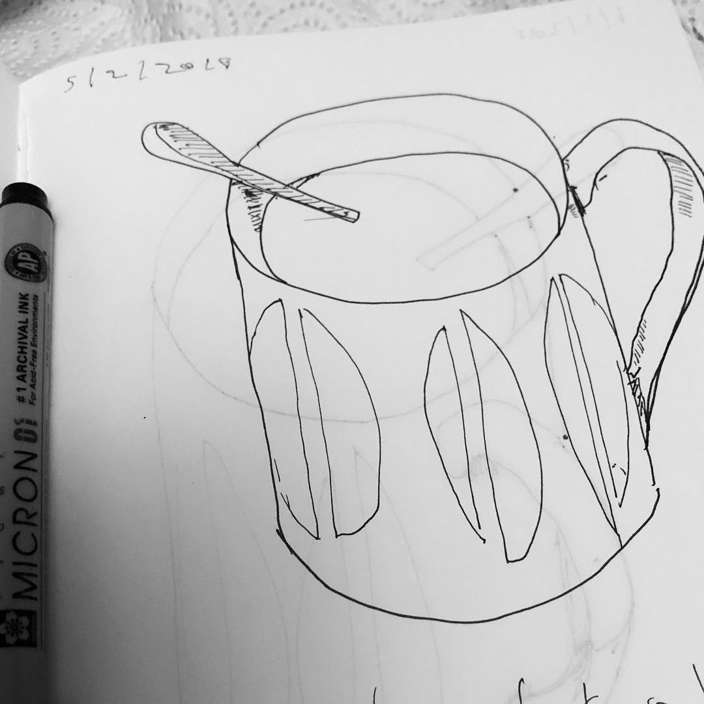
I’ve never tried dictation on my phone before. Doing it right now and it seems to work flawlessly. Even with my Scottish accent and speaking at my usual rate of knots. I’m very impressed.
You can tell a new social network is maturing when you find discussions on the ins and outs of the musical career of Steven Wilson.
It’s time to turn off auto-renew for Evernote premium. I only use it for importing Kindle highlights from Clippings.io now and free is good enough for that.
🎵 I’ve been listening to this wonderful Norwegian band a lot recently. knekklectric.bandcamp.com
I can’t remember who posted about doing a morning sketch of their teacup/coffee mug but I’m going to do the same for all of February.
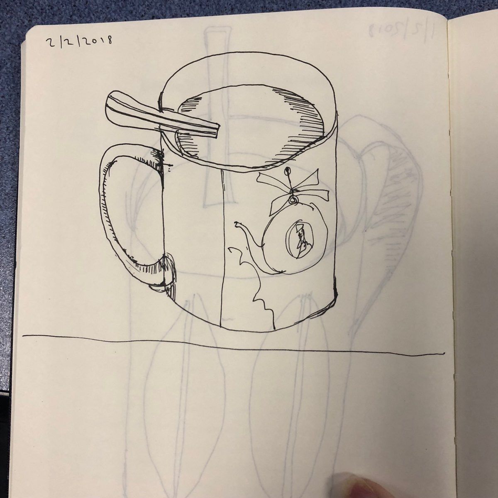
📚 How I Met My Wife. This old New Yorker piece makes me gruntled.
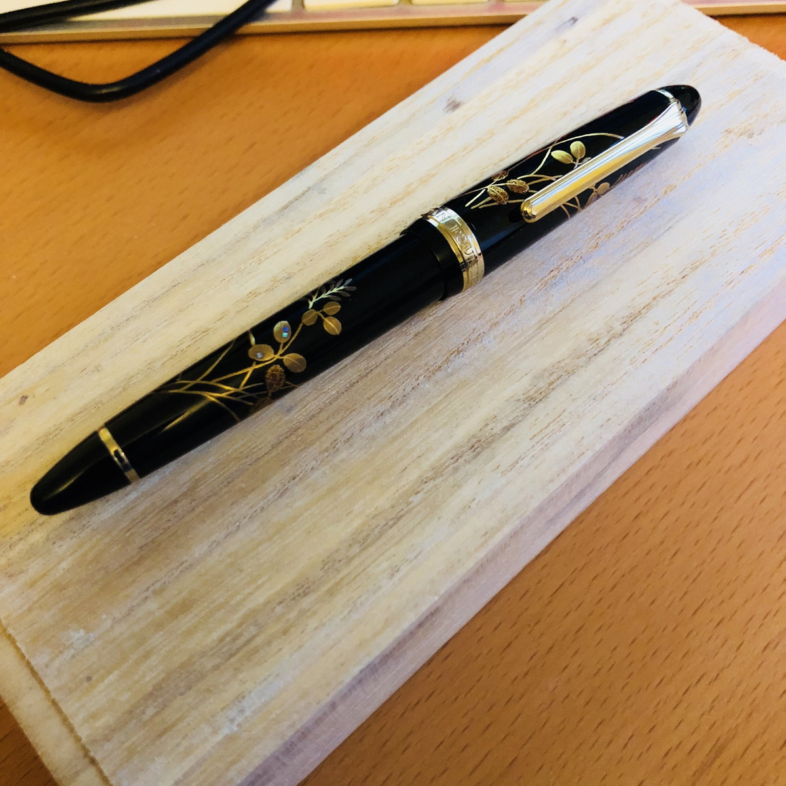
I bought this Japanese fountain pen years ago based entirely on its look. Unfortunately it’s too small in my hand to be used comfortably for any length of time so I just take it out now and again to gaze at it and make sure it still works.
I’ve started to read The Left Hand Of Darkness by Ursula K. Le Guin. It’s a shame that her passing has finally spurred me into doing so. 📚
I hope the HomePod is a success but silly phrases like “the experience of moving to a Retina screen… for your ears” are not going to convince me to give up what I already have.
Rush: a band who sparked the teenage imagination like few others. Nice, fair, piece in The Guardian about the retirement of Rush.
I’ve been reading Detroit 67: The Year That Changed Soul It’s an excellent bit of popular music and social history centred on the tensions within the Motown record label in that year. 📚
I ordered a keyboard from Amazon UK today and was asked at the order page if I wanted to conceal what was in the package. It’s maybe not the best of keyboards but nothing to be embarrassed about.
I got some cartridges for my slightly battered Lamy Al-Star fountain pen. Planning to use it a lot this year.
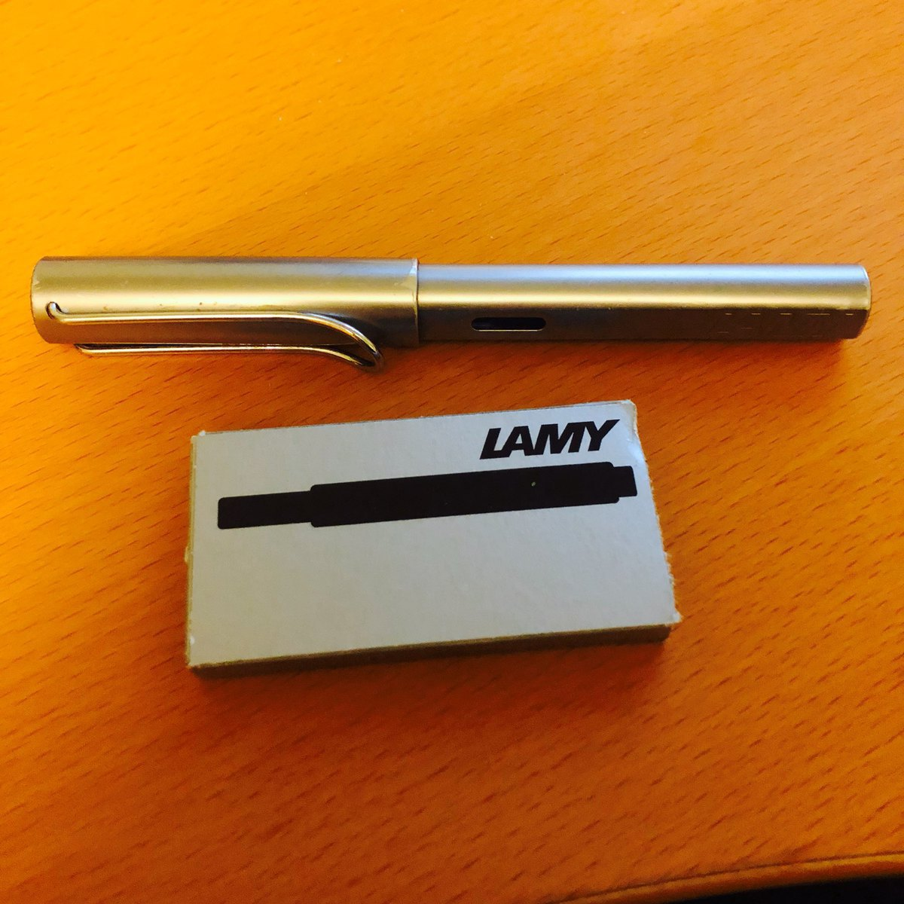
🎧 The Tower by Motorpsycho is a phenomenal album. I want to go and buy everything they’ve ever recorded now.
One of the nice little bonuses of Amazon Prime is having every season of Seinfeld at the touch of a button. I still love it but wonder how today’s audiences would take it.
I tried to hold off but I’ve just ordered an iPhone X. The O2 Recycle price on my 7 meant I could pay off the contract and get a 64GB space grey version. The larger memory models were out of stock and not due in for weeks but I can get by on 64GB. Should be here tomorrrow.
Tyding up and I found this. Another exhibit in my old tech museum. You plugged it into an iPod and it transmitted music to a nearby radio.
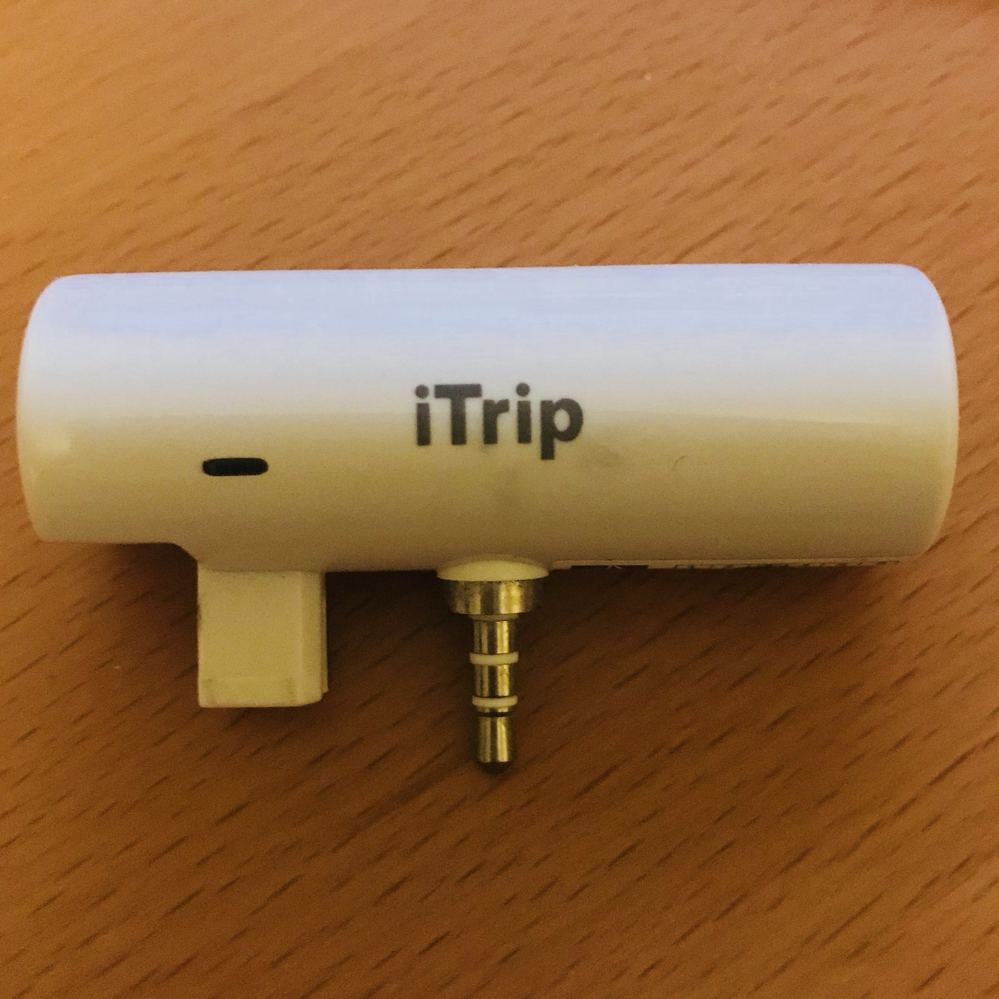
I’d forgotten how great Popclip is until today. I bought and used it a few years ago but must have missed reinstalling it after an OS update.
Day Two of @douglane’s Micro.blog Photo Challenge - “Tasty”. No work tomorrow.
Micro.blog Photo Challenge Day 1: #squares. Ceiling lights, Argentum app, double exposure. I had to go a bit abstract for this one.
I have over twenty iOS app updates waiting and every one is for iPhone X compatibility which I don’t need.
The people who recorded my favourite music have been leaving the planet at an alarming rate. Sad times. Canterbury Legend Phil Miller Remembered
Great show by Dweezil Zappa and band in Glasgow tonight. I don’t think the set list had any Zappa songs beyond the mid 70s which was fine by me.
I’m getting errors using OwnYourSwarm on my site. Checkins with a photo are posting to Wordpress with a 1970 date and linking to non-existent pages. It didn’t do that before.
The common cold I thought I had seems to have been a bit more. I’ve had no energy for about a week and I just feel like I’m getting my strength back now. There seems to be a lot of nasty stuff going around.
I’m not sure if it’s connected but since updating to iOS 11 GM the Sonos app has become a real battery hog in the background. Battery settings show that it has used 85% of resources in the last twenty four hours.
I hope it’s not called iPhone Pro. My heart sinks whenever “Pro” is added to the name of anything now.
If Micro.blog posts can have more than 280 characters then the iOS app could become a great little blogging client.
“Flickr and Yahoo are now part of “Oath” and are members of the Verizon family of companies. Beginning 15 September 2017, we plan to share some user information within our new family. Learn more”. Time to close this account.
Just spent the last couple of hours cleaning up a hack in my Wordpress installation. Someone had managed to inject a pile of crap into my file system. I’ve never had this sort of thing happen before. Made some security changes to hopefully stop it happening again.
I understand the arguments against ad-blockers but if you have those “15 shocking celebrity pictures” type ads on your site then I have little sympathy. It’s insulting to readers and I will block.
I’ve managed to get OwnYourGram and OwnYour Swarm working on my site today. Goodbye to extra plugins and IFTTT recipes.
There’s a load of spam getting through to my mac/icloud email address today. It seems like someone has turned off the filters.
I spent some time today learning a bit about Hugo after several mentions here. I managed to download and install it on my mac all via the terminal which was quite satisfying.
Switched themes temporarily to Sempress and it doesn’t send the gravitar image to Twitter with Bridgy. It must be some code in the Independent Publisher theme but I wouldn’t know where to start looking.
A question for anyone who uses the Bridgy plugin for Wordpress. How do you stop it sending the website icon/image as part of tweets?
MotionX Poker. This was one of the first and best apps I ever bought for iPhone. It hasn’t been updated in years but still plays without any warnings.
Farewell Walt Mossberg, the scourge of Silicon Valley Sad to see him go when you consider the state of most tech journalism.
Masashi Wakui on Flickr: these photos of Tokyo are wonderful.
It’s not often I’ll share something from The Daily Telegraph but this Iron Maiden gig review is pretty great.
Much enthused by IndieWeb ideals but I wouldn’t know one line of code from another. If there isn’t a Wordpress plugin for something then I’m at a bit of a loss.
Word Of Mouth - Cucks, snowflakes and virtue signalling: the new US political lexicon Excellent edition of the BBC Radio 4 show about language.
The Post Kinds plugin effect looks fine in Safari but adds ugly grey lines in other browsers which I only noticed tonight. I’ve deactivated it again.
The fearlessness of the people in these old photographs amazes me. The Dapper Daredevil who Documented America’s Skyline in the Making
I’ve just about had it with third party complications on the Apple Watch. They work/don’t work, appear/don’t appear. Totally unreliable.
It’s local election day here in the UK and I’ve cast my vote without much enthusiasm. The local campaigns were a bit overshadowed by the looming monster of the General Election in June . I’m not looking forward to that.
The new album by Big Big Train, one of my favourite bands, is out today. Check out Grimspound.
Spent a big part of my childhood reading comics drawn by Leo Baxendale. RIP.
I can’t wait to read the new Mike Nesmith autobiography. He had the most interesting career of all the ex-Monkees.
There seems to be a lot of layers to micro.blog that I haven’t quite got to grips with yet. I look forward to finding out what I can do here.

{kind=link}
{kind=link}
{kind=link}
{kind=link}
{kind=link}
{kind=link}
{kind=link}
{kind=link}
{kind=link}
{kind=link}
{kind=link}
{kind=link}